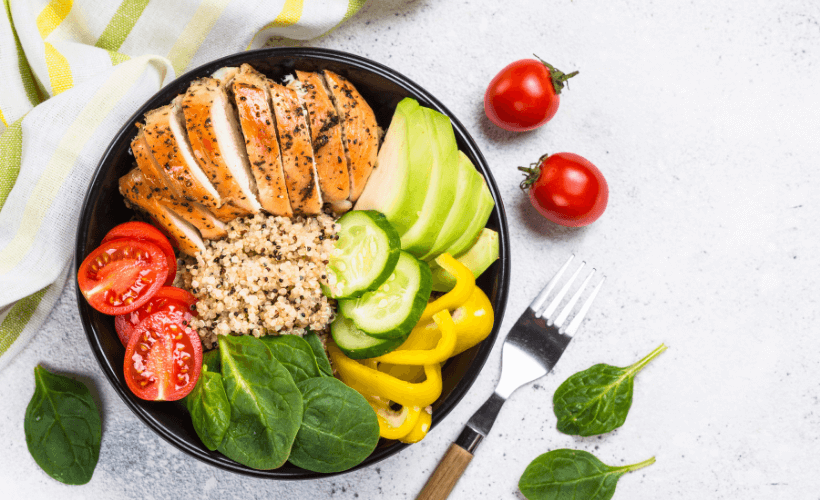
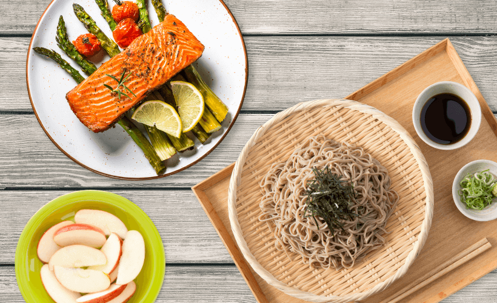
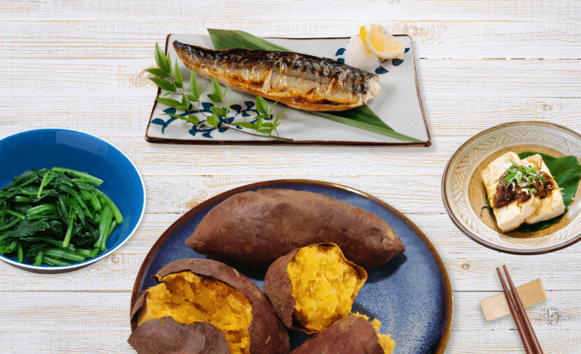

關於我們
健人餐盒由一群熱愛健康飲食的料理人創立，我們相信：好的食物不只是填飽肚子，而是滋養身心、給予能量。
每一份餐盒都由專業營養師與主廚共同設計，使用嚴選在地食材，以最簡單、自然的烹調方式，將食材的營養與風味發揮到極致。



健康理念
使用最少加工的天然食材，保留食物最完整的營養成分與風味，讓每一口都充滿活力。
每份餐點都經過蛋白質、碳水化合物、好脂肪的精準計算，幫助你達成健康目標。
採用烤、蒸、川燙等健康烹調方式，保留食材營養，控制熱量攝取，吃飽也不怕胖。
從日式烤魚、地中海沙拉到墨西哥捲餅，豐富多樣的料理風格，讓健康飲食不再無聊。
聯絡我們
台北市健康路 100 號
02-1234-5678
週一至週五 10:00 – 20:00
週六至週日 11:00 – 18:00
hello@healthybox.tw